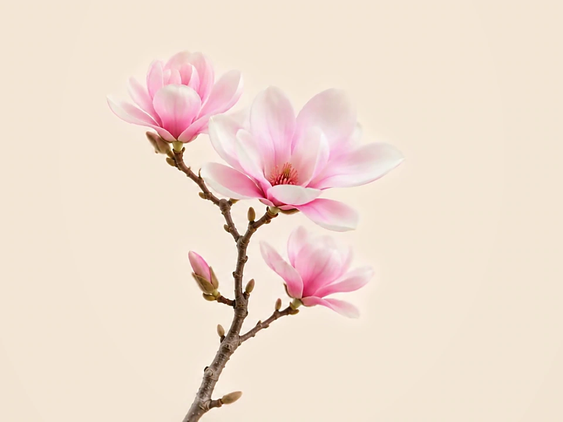
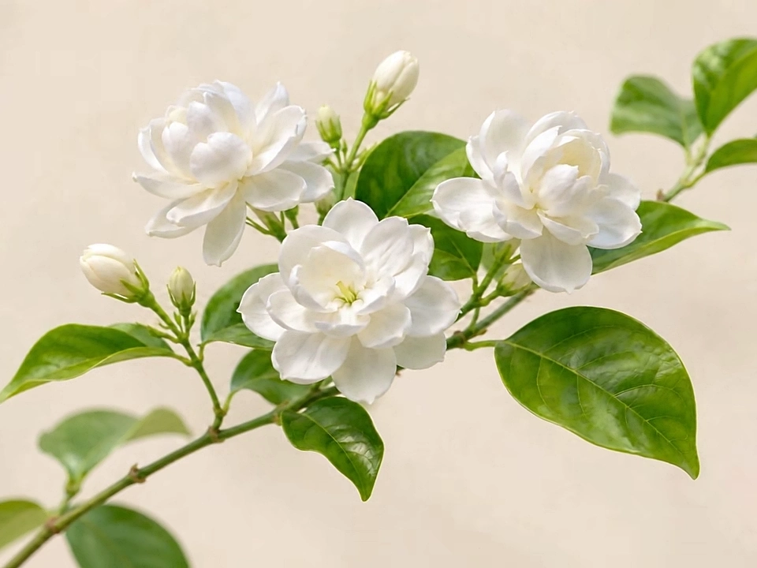
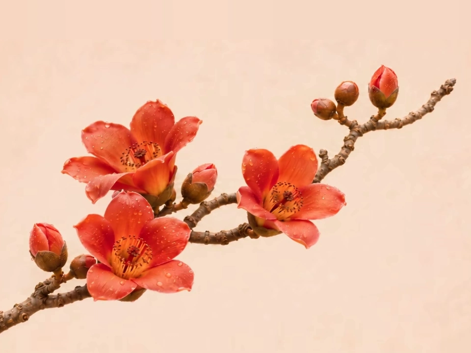
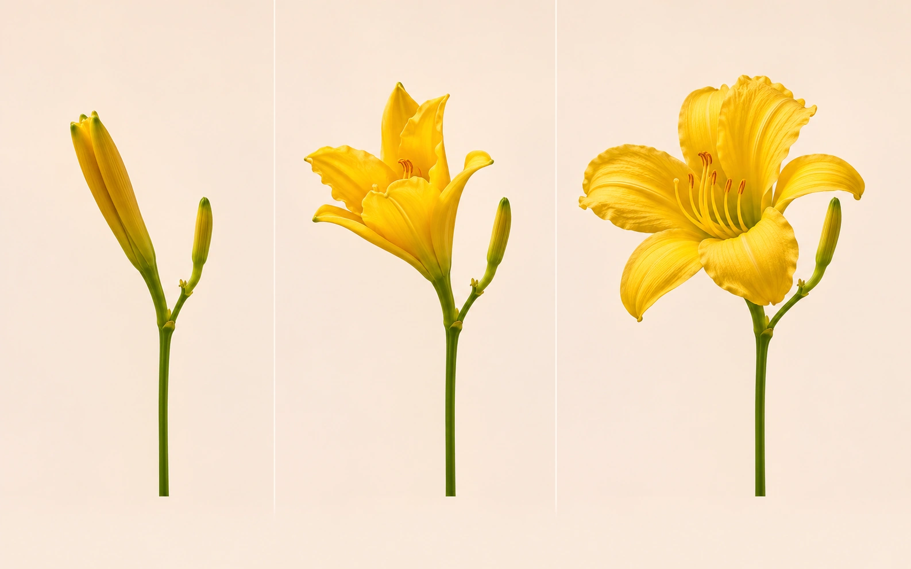

四川花卉 · 乡土文化 · 数字助农
让一朵花，
连接一方水土。
百花齐放
一手轻启 · 五花同开100%
用一只手的拇指与食指，让五朵花一起绽放。也可点击“自动演示”，无需开启摄像头。
等待手部识别
 进入黄花之境
进入黄花之境渠县黄花
一朵忘忧，留住家乡的味道。

进入辛夷之境江油辛夷
一山春信，续写林间的生活。
进入荷花之境
中江荷花
一池清韵，生长水乡的丰盈。

进入茉莉之境犍为茉莉
一缕花香，走过花田与茶坊。

进入木棉之境攀枝花木棉
一树红棉，映照花城的春色。
五种花卉，五方水土，一场指尖与乡土的相遇。双指开合，五花同开 · 点击花卉进入独立展厅
BEYOND THE BLOOM
花开有故事，
土地有回响。
看见花的美，也认识它的来处。
从文化到日常，让每一次好奇
都有继续探索的方向。
CULTURE / 产地与传承
一筛黄花，
留下土地的味道。
从采摘、蒸制到摊晾，认识渠县黄花的传统手艺，以及花田与农户日常的联系。
阅读产地故事
TASTE / 花食与风味
黄花入馔 · 家常有味
在一碗汤、一盘家常菜里，遇见熟悉的金色滋味。
探索花食做法ORIGIN / 产地与好物
让产地好物
被更多人看见。
从渠县干黄花出发，了解本地产品、生产企业与已核对的渠道资料。
认识产地好物花卉观赏与食用用途分别介绍；产地好物页面会注明渠道性质，以实际商品与来源信息为准。
A GESTURE, A BLOOM
轻轻张开，
让花回应你的手。
把一瞬的花开，交给指尖慢慢感受。
张开、停留、收拢，每一步都由你决定。
右手 · 双指开合
拇指与食指的距离，控制含苞到盛放。
左手 · 张掌轻挥
左右平移，在五种花卉之间切换。
进入展厅后自主开启摄像头，也可使用鼠标滑块。
花开的三个瞬间In Full Bloom.

这里是花开过程的静态对照，进入展厅即可连续控制。
OUR INTENTION
让被看见的，
不止是一朵花。
掌间花开，是一场四川特色花卉、乡土文化与数字艺术的相遇。我们借助 AI 辅助开发与手势识别，把花朵的自然之美、产地的文化记忆与特色农产品的日常价值，放进同一场互动体验。
以互动唤起好奇，以故事传递乡土温度，以真实渠道连接消费市场。看见花，也看见花背后的土地、手艺与劳作，探索数字技术赋能乡村振兴的新路径。
从一朵花开始认识四川